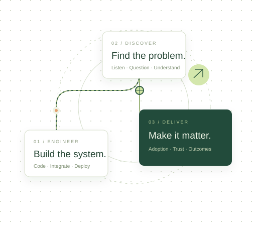

YOUR NEXT CHAPTER IN ENGINEERING
Build beyond
the code.
Become the engineer who turns customer problems into solutions that matter.
Start your journey ↗A practical path from SWE to Forward Deployed Engineer.

ENGINEERING × CUSTOMER IMPACTChapters completed
Focused learning modules
Assessments passed
THE CURRICULUM
Learn it. Practice it. Deploy it.
No chapters match your search.
6 CHAPTERS · MODULE 01
Foundations of forward deployed engineering
Understand the role, the engagement lifecycle, and the shift from code to customer outcomes.
5 CHAPTERS · MODULE 02
Customer discovery & communication
Turn ambiguity into requirements, earn stakeholder trust, and present solutions that drive decisions.
5 CHAPTERS · MODULE 03
System design & delivery
Design customer deployments around measurable requirements, resilient integrations, and clear ownership.
8 CHAPTERS · MODULE 04
Advanced field engineering
Investigate difficult customer problems and build stronger operational judgment.
2 CHAPTERS · MODULE 05
AI foundations
Understand the concepts, ask better questions, and navigate official documentation.
YOUR LEARNING, YOUR DEVICE
Pick up where you left off.
Chapter completion, quiz attempts, and exercise drafts stay in this browser. Export a backup to keep a copy or move to another device.
About the content & resources
Chapters 1–11 preserve the authored lessons from SWE To FDE Playbook, with native browser exercises, recovered quizzes, and local diagrams. AI feedback actions have been adapted into self-review guidance. Numerical customer scenarios are fictional training examples.
Resources were checked on October 23, 2026. Some source URLs could not be verified; those are identified in the resource directory. External articles and videos require internet access.
Chapter 12 is newly authored continuation material, with an original architecture diagram, capacity calculator, design workshop, and eight assessment questions. Its primary resources were checked October 24, 2026.